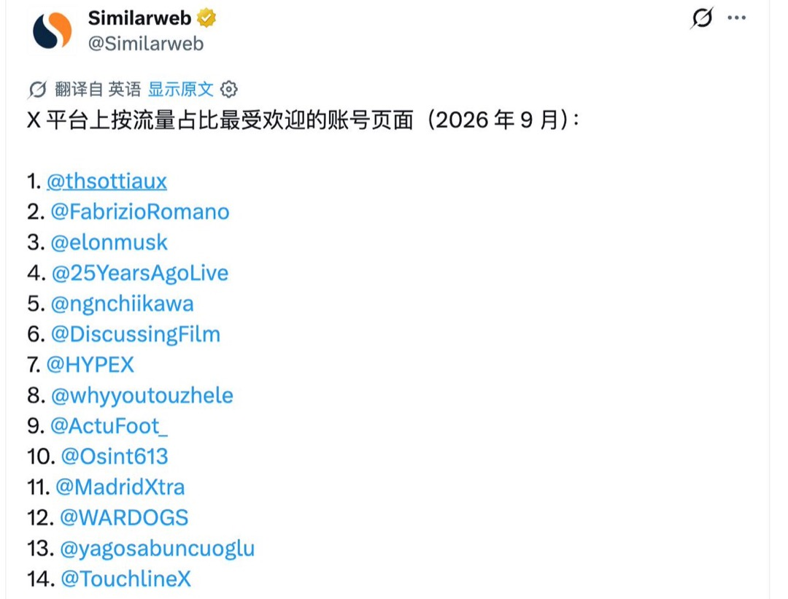
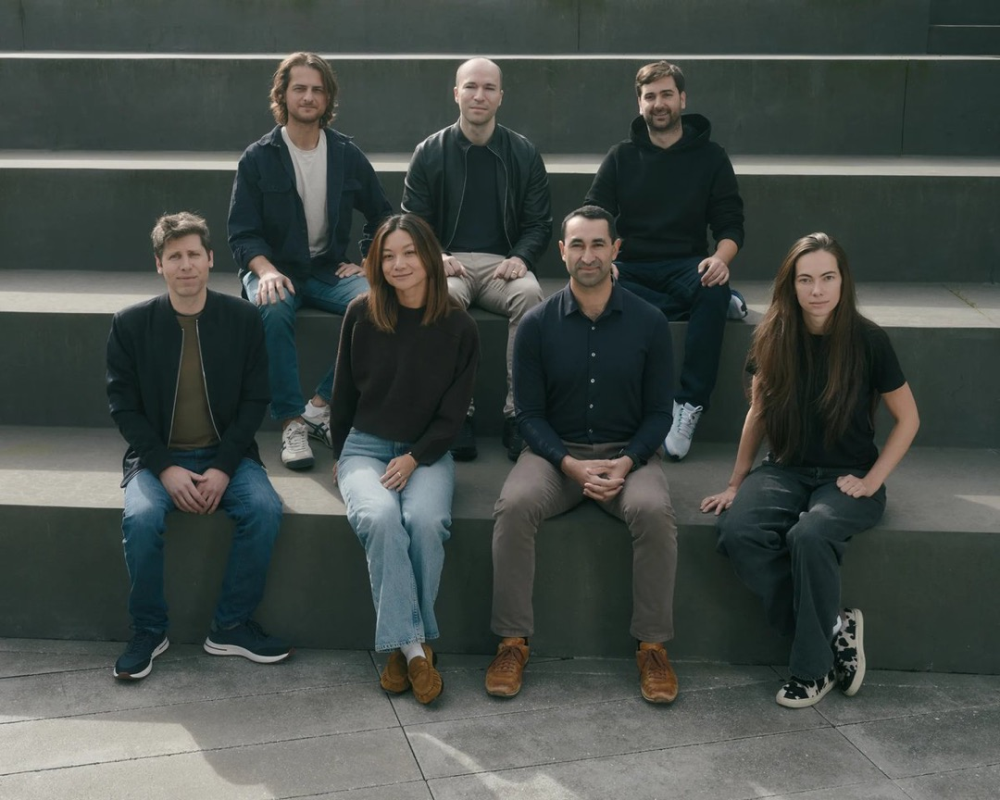
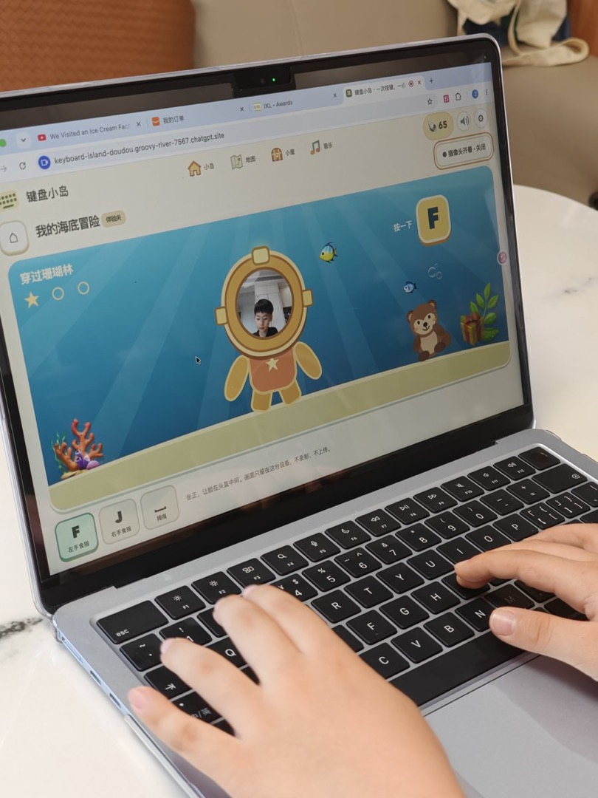
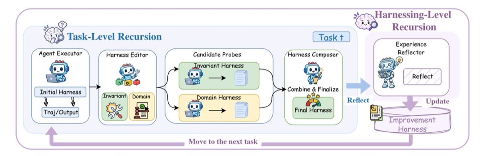
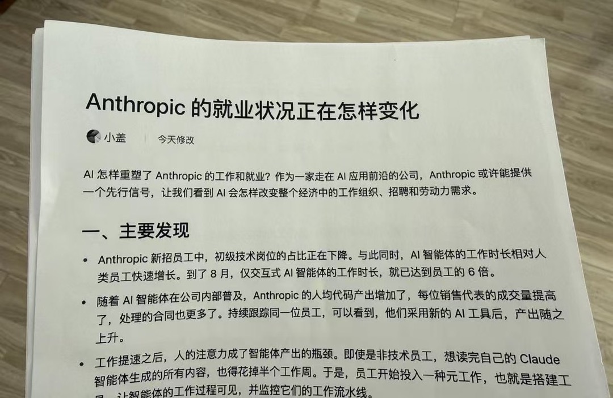

本期速览
02 多数公司弃用后训练的运维与条件考量
04 Codex 30分钟构建打字游戏应用
05 Harness²让智能体自我进化
06 Anthropic就业报告减少初级岗位招聘
01｜Similarweb公布9月X主页访问量排名
来源（X） · @mylifcc · 2026-10-18 20:53
第一名不是马斯克，而是 OpenAI 负责 Codex 和 ChatGPT 的 @thsottiaux （Tibo），看得出来大家对于Tibo的重置很有需求。。。
榜单前 12 名分别是：
@thsottiaux，Tibo，OpenAI 的 Codex 和 ChatGPT 负责人，89 万粉丝
@FabrizioRomano，足球转会记者
@elonmusk ，马斯克
@25YearsAgoLive，按日期「直播」2001 年发生的事
@ngnchiikawa，日本动画《吉伊卡哇》官方号
@DiscussingFilm，影视新闻
@HYPEX，游戏爆料，主要是 Fortnite
@whyyoutouzhele，李老师不是你老师，中文时事号
@ActuFoot_，法语足球新闻
@Osint613，开源情报和军事新闻
@MadridXtra，皇马球迷号
@WARDOGS，军事冲突新闻
这里排的是「主页访问量」，不是粉丝数，也不是帖子曝光。意思是有很多人专门点进这个人的主页去看，通常因为他会定时发大家需要盯着的信息。

引用内容
lifcc @mylifcc
很多人还在看台前的高管，但刚刚 Every 发布的万字内幕长文揭晓了真正的赢家：Thibault “Tibo” Sottiaux。@thsottiaux
他在 2024 年底只是想给内部研究员写个提速工具，结果在不到两年时间里，不仅一手打造了 Codex，还在今年 7 月被提拔统管 OpenAI 的所有核心产品与平台。
1. 他接手 Codex 后，直接改变了方向
2025 年春夏，Codex Cloud 的市场表现不理想。当时 Tibo 接手团队，作出了一个重要决定：
从 Cloud 转向 Local。
这个转变让 Codex 能够直接访问用户已有的代码、开发环境和工具，并允许用户在任务执行过程中进行干预。
2. 他决定用 Rust 重写 Agent
更激进的是，Tibo没有选择在现有 CLI 上快速堆功能。
他推动从头重写 Agent 核心，并将执行引擎与终端 UI 解耦。
这样，同一个 Agent 核心可以服务于不同界面：
> Codex CLI
> VS Code / Cursor 等编辑器扩展
> Codex 桌面应用
Tibo 甚至承认，团队最初推出 CLI 功能比较慢，正是因为大量时间投入了 Agent 核心的开发。
他愿意牺牲短期功能交付速度，换取长期的架构灵活性。
3. 他最初做 Codex，是为了让 AI 加速 AI 研究
Tibo 在 2024 年 12 月左右就开始参与 Coding Agent。
当时并没有明确要推出一个独立的商业编程产品。
他的目标是让 OpenAI 内部研究人员利用 AI 编写基础设施和实验代码，从而更快地训练下一代模型。
团队针对内部代码库训练编程 Agent，研究人员每天使用，再把问题反馈给模型团队。
形成一个循环：
AI 帮研究人员做实验 → 研究人员改进 AI → 更好的 AI 进一步加速研究。
文章特别指出，Codex 独立模型路线最初并非某次高层会议作出的战略决定，而是这种内部研究探索逐渐演化出来的。
4. 他第二次逆势决策：押注桌面 App
当 Codex CLI 和编辑器插件终于开始增长时，正常的选择应该是继续扩大投入。
Tibo 却认为，未来用户可能同时管理多个 Agent，而且交互不只包含文本，还会有图片、语音等内容。
所以他提出，继续维护 CLI，但下一阶段的重点投入应该放在原生桌面 App。
他还找来了 Andrew Ambrosino 参与设计与开发。
Tibo 最突出的能力是把前沿模型研究、底层系统架构和产品方向连接起来
在顶尖 AI 实验室里，顶级 Researcher 往往拿着 NBA 巨星般的千万美金合同，而做 Infra（基础设施）的人常被当成“修水管的”。
但 Tibo 的故事证明了：在 Agent 时代，谁掌控了让模型自我迭代的闭环基建，谁就定义了最终的旗舰产品。

02｜多数公司弃用后训练的运维与条件考量
来源（X） · @kafkaup · 2026-10-18 22:33
大模型这个概念，从一开始的设计初衷，就是一个超级大模型解决所有事情。从 2022 年底开始就是这样，一个模型既能回复邮件，又能翻译、写代码。当我们看到 GPT-3.5 的时候，都感觉算法工程师这个岗位是不是要干到头了，以前 NLP 的各种细分小任务都不需要做了。
但大家总不能直接摆烂什么都不做，除了搞基座模型的大佬，普通算法工程师也得混口饭吃。所以在 2023、2024 年，很多大中小公司纷纷推出各种垂直模型。所谓的垂直模型，就是基于开源大模型和自己领域的数据，后训练出一个符合特定场景要求的模型。但大家想想，所谓的“垂直”，是不是本来就和大模型的本质有点背道而驰？
不可否认，垂直模型在某个具体领域的数据上确实能取得更好的效果，这我不跟你犟。但只要你真正工作甚至实习过，就会明白为什么大多数公司或团队都不会去做后训练：
1. 成本问题：这里的成本不仅是训练成本，更重要的是运维成本。一个模型不是训练完就完事了，它需要持续迭代，还要保证生产环境的稳定。如果只用开源模型，100 台服务器可以覆盖公司所有的业务场景，互相做 backup；但如果针对某个场景单独后训练了一个模型，它就只能在这个场景发挥作用，我还得单独搞一套集群去部署它，别的服务还用不了。这个运维成本太高了。
2. 绝大多数公司根本不具备后训练的条件：99% 的公司其实没有这个能力。工作不是写论文，不是说有现成的数据、跑跑脚本、看看训练集群就完事了。想真正玩明白后训练，需要深入梳理业务场景，需要业务方紧密配合。而且如果团队里没有一个懂行的 Leader，纯粹是在浪费算力资源，搞了一年可能还不如直接用开源模型的效果好。
大家都知道大模型的价值很高，但很多公司根本没法靠它赚到更多的钱。现在摆在面前的两条路：要么去研究应用落地，看怎么用 AI 提高公司利润；要么继续砸钱做后训练，虽然能帮助员工成长，但能不能帮公司赚到钱完全是未知数。换作你是老板，你会怎么选？
当然，有一类场景下后训练确实非常有价值：就是调用量极其庞大的高频场景。这种情况下，后训练一个小模型确实能大幅节省成本、提高推理速度。但这种团队往往都是大厂的核心团队，本身并不需要多少人，只要极少数的顶尖牛人。能不能进得去这样的团队，就是另一个大问题了。
03｜AI工程化从写Prompt走向生产系统
来源（X） · @UPing123zzz · 2026-10-18 14:36
从最早的 Prompt Engineering，到后来的 Context Engineering、Workflow、Agent、Skills，再到 Loop Engineering、Harness Engineering，各种概念一波接着一波。
但为什么发展到今天，我们还是在用最原始的 Prompt 操纵 AI？
你打开 Codex、Claude Code，发现真正让它们干活的方式，依然是输入一段自然语言。说白了，还是在写提示词。
我之前搭过 33 个节点的 Workflow，也做过自动视频剪辑 Skill。做这些项目的时候，我一直在想，这些新东西到底比 Prompt 高级在哪里？为什么大家隔一段时间就要创造一个新的 Engineering？
后来发现，很多人可能把这些概念理解错了。
Prompt 是告诉 AI 你想干什么，Context 是给 AI 提供它需要的信息，Workflow 是把任务拆成固定的流程，Skill 是把成熟的方法封装起来重复使用，Agent 是让模型自己决定下一步怎么做，Loop 是让它执行完再检查、再修正，Harness 则是给整个过程提供工具、环境和约束。
看起来是各种新技术，其实大部分都在围绕一个问题打转：怎么让 AI 不仅听懂你的话，还能真正把事情做完。
所以 Prompt 根本没有过时，其他东西也不是它的替代品。
以前我们写一段 Prompt，让 AI 生成代码。生成错了，自己检查，再写一段 Prompt 让它修改。现在有了 Agent，它可以自己运行代码、发现报错、修改代码、重新测试。
表面上我们还是只输入了一段 Prompt，但背后已经有一整套工程系统在替我们干活。
这也是为什么我觉得，没必要每出来一个新概念就追着学。很多时候只是把原来需要人工操作的东西进一步自动化、标准化了。
但也不能说这些东西只是噱头，一个 Prompt 可以让 AI 写出程序，却不能保证程序真的能运行。一个 Skill 可以告诉 AI 怎么剪辑视频，却不能保证生成的视频没有黑屏、音画不同步或者其他问题。
这些事情最终还是得靠真实的工具、程序逻辑和自动化测试来解决。
大模型负责理解和判断，传统软件工程负责约束和验证。两者结合起来，才有真正能交付的 AI 产品。
所以未来的方向，我认为不是 Prompt 越写越长，也不是发明越来越多的 Agent 框架，而是人只需要把目标说清楚，剩下的执行、检查、修复和交付，都尽可能让系统自己完成。
从头到尾，人和 AI 之间最重要的交互方式其实没有发生根本变化，变化的是 Prompt 背后能够调用的能力。
我现在做 AI 项目，也不太想只追求一个功能能不能跑通了。能跑通的 Demo 太多了，真正难的是稳定性、成本、异常处理和可验证的交付。
以前比的是谁更会写 Prompt，以后真正拉开差距的，可能是谁能把一个简单的 Prompt，变成一套稳定运行的生产系统。
这才是我理解的 AI 工程化。
04｜Codex 30分钟构建打字游戏应用
来源（X） · @shao__meng · 2026-10-18 18:00
这。。小孩和女人钱这么好赚？？
我说等我半个小时，打开 Codex，把打字游戏的需求输入进去，一个 Goal 跑起来，20 分钟就做好部署到 ChatGPT Sites 了。花了几分钟看了一遍，还不错，顺手再加了一个实时拍摄人像，让头像作为游戏主角的功能，30 分钟准时交活儿。
效果怎么样呢？我第一版做了 36 关，儿子一连玩了 18 关 😁😁😁，我边看他玩，边看有什么问题，边让 Codex 改，顺便增加了几十关，和无限模式。。
以后儿子再有什么想玩但花钱的游戏和应用，自己做就行了，大家感兴趣可以看这:
https://keyboard-island-doudou.groovy-river-7567.chatgpt.site

05｜Harness²让智能体自我进化
来源（X） · @Gorden_Sun · 2026-10-18 10:55
Harness²是一个即插即用的智能体优化框架，能在保持底层模型权重不变的前提下，通过自动调整系统提示词、工具指南、记忆和子智能体等8个外围组件来提升任务表现。
采用双层递归机制，既能在无标准答案反馈的情况下通过对比试探优化当前任务的执行配置，又能将成功经验沉淀下来指导后续未知任务。在三项专业基准测试中，仅需单步递归就能让GLM-5和Gemini3.5Flash的表现比基础配置最高提升11.5分，为开发者免去了繁琐的手动调优工作。
Github：https://github.com/google-research/harness2

06｜Anthropic就业报告减少初级岗位招聘
来源（X） · @xiaogaifun · 2026-10-18 11:55
Anthropic 的技术博客，含金量真的很高。最近发布的一些文章，我觉得已经可以当论文来看了，基本上都会打印出来仔细阅读。
前天，Anthropic 又发表了一篇非常重要的研究报告，叫《How employment is changing at Anthropic》。
这次 Anthropic 直接拿自己的员工做样本，通过内部招聘数据、员工工作记录、面试评价，以及 17 位员工的访谈，研究 AI 给公司的人员结构、招聘标准和协作方式带来了哪些变化。
我觉得特别有价值。毕竟 Anthropic 已经是全球 AI 使用程度最高的公司之一，他们现在经历的变化，很可能就是接下来的趋势。
分享几个我的收获，尤其是对正在找工作的朋友，我觉得很有参考价值。
1、初级岗位的招聘，确实在明显减少。Anthropic 的数据显示，从 2025 年初到今年，技术部门的初级员工占比，从 21% 下降到了 14%。
而在新招聘的技术员工中，初级岗位的占比下降得更厉害，从 27% 跌到了 9%。
注意，Anthropic 的技术团队仍在扩张，但招聘越来越偏向有经验的人。
原因也相对比较好理解。毕竟 AI 现在已经可以完成很多复杂任务了，所以企业对人的判断力要求反而越来越高。
过去企业招聘初级工程师，通常会让他们先从简单的开发、测试、Bug 修复开始，慢慢积累经验。但现在，这些工作已经可以大量交给 AI 完成了。
类似的变化也出现在一些基础行政岗位上。即使 Anthropic 的员工规模快速增长，这些岗位也没有出现相应的招聘增长。
我自己也有类似的感受。
从年初到现在，我陆续跟不同的实习生（非 985 高校）合作过。说实话，整体体验并不算特别满意。主要问题还是大家缺乏经验，遇到一个稍微复杂点的问题，可能就会卡很久。
如果再缺乏主动性，就需要我不停地安排任务、检查进度，那我还真不如直接把事情交给 AI 完成。
所以从生产效率的角度来看，对于 AI 使用程度很高的公司，初级岗位的需求可能会越来越少。
2、Anthropic 的招聘标准也发生了明显变化，越来越看重一个人的自主性和判断力。
Anthropic 分析了自 2024 年以来数千名录用员工的面试评价，发现技术岗位的评价中，增长最明显的两个维度是 Autonomy 和 Judgment，也就是自主性和判断力。
与此同时，对特定领域专业知识的关注占比反而有所下降。
这个变化很有意思。
之前我也写过几次类似的话题，包括 Notion 首席设计师的一些分享，都提到了主动性的重要性。
因为有了 AI 之后，一个员工实际上已经可以同时管理好几个 Agent，相当于每个人都带着几个下属。
这时候，工作方式就需要改变了。
过去可能是领导分配任务，员工按照要求完成。但现在，一个人完全可以自己提出想法，制定计划，再调动 AI 去实现目标。
在 AI 时代，主动性可能会成为一个人非常重要的竞争力。
3、但到底怎么判断一个人有没有主动性？
和运营、编程、设计这些专业技能相比，主动性多少有些主观，很难通过一道面试题判断出来。
年前，我给客户推荐过一个候选人，结果面试没通过。我很惊讶。因为之前跟他共事过，基本功不错，人也挺机灵。
客户老大叹了口气说：主要问题是他的主动性不够。我继续追问：你是怎么判断出来主动性不够的？
对方回答：问之前在某个项目里负责了什么，话里话外能听出来，他的工作范畴仅仅就局限在领导安排的事情上，没见着他的思考，基本上就是安排什么做什么。
主动性不够，来我们团队，很难生存下去。所以也就没推进了。
我挺认同客户的判断。
不管是在大厂还是小厂，主动做事，为目标着急永远是重要的能力。
领导推一步，然后干一步，这种性格很难把事情做好。
并且，我总觉得，主动是一种受益终生的思维方式，主动和同事沟通进展，主动思考问题的解决方案，主动认识一些厉害的人......
在我看来，主动性至少包括三个方面。
首先，一个人眼里得有问题，能够主动发现哪些事情值得做、哪些地方需要改进。其次，发现问题之后，愿意自己想办法，寻找资源，不停地把事情往前推进。
最后，遇到困难不会轻易停下来，更不会一直等着别人安排，而是会想办法把问题真正解决。
总之就是没有等靠要的思维方式。
4、Anthropic 越来越在乎候选人使用 AI 的能力，尤其是实际经历。
报告里有个很有意思的数据。2024 年，Anthropic 的技术岗位面试评价中，只有大约 5% 会提到候选人使用 AI 工具的经历，非技术岗位大约是 7%。
但到了 2026 年，这两个比例分别增长到了原来的 3 倍和 4 倍。
尤其是非技术岗位，变化非常明显。
这也给我们提了个醒。如果面试的时候，只是和面试官讲自己熟悉 Claude、Codex，恐怕已经没什么说服力了。这些工具谁都会用。
重要的是，我们用 AI 解决过什么具体问题。比如自己设计过一套工作流，或者利用 AI 做过一个小工具。我个人觉得这种真实的作品，比简历上罗列一堆 AI 工具更有说服力。
因为它能直接展示自己使用 AI 解决问题的能力。
5、AI 对应届生确实不太友好。
特别是非 985 或者 211 高校的学生，相比十年前的毕业生，大家就业压力大不少。
过去很多应届生的起点，几乎都是从简单的工作开始，然后在实际项目里慢慢积累经验，几年之后才能逐渐独当一面。
但现在，AI 正在接管其中一大部分基础工作。如果企业越来越倾向于招聘有经验、有判断力、能够独立完成任务的人，那么应届生，应该去哪里获得这些经验？
这真是个挺棘手的问题。我亲戚家的孩子就是这情况，毕业一年了，现在还在家里待着。
所以，我感觉尤其是还在上学的同学，毕业后想进入互联网行业，真的应该尽早利用 AI，积累一些真实的项目经验。
比如开发一个自己真正想用的小产品，解决身边某个实际问题，或者给一项真实业务设计自动化流程。
很多二流学校的学生，在这时候了，还是在努力考研，以考研为荣。我真心觉得糊涂。
如果只是因为不知道毕业之后该做什么，或者天真的认为多一张文凭就能找到更好的工作，那真的应该重新考虑这事的逻辑。
尤其是那些将来想进入互联网行业，做产品、运营或者开发的同学。
现在 AI 已经把做产品的门槛降得非常低了。真的应该花点时间，去做几个真实的项目。最好能找到用户，收集反馈，再不断改进。
这个过程既能积累经验，也能锻炼前面提到的主动性、判断力，以及使用 AI 解决问题的能力。
等到真正找工作的时候，直接把作品拿出来，讲清楚自己解决了什么问题，以及取得了什么结果。反正如果我是面试官，我会非常愿意和这样的应届生聊聊。
